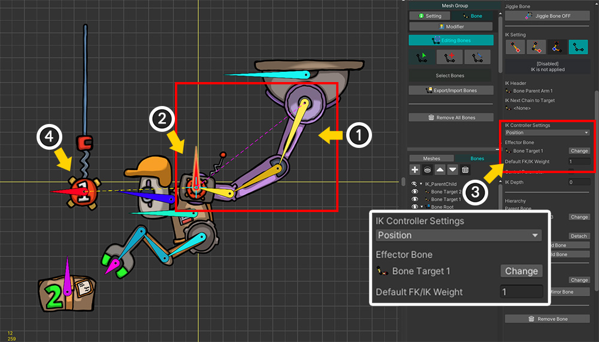
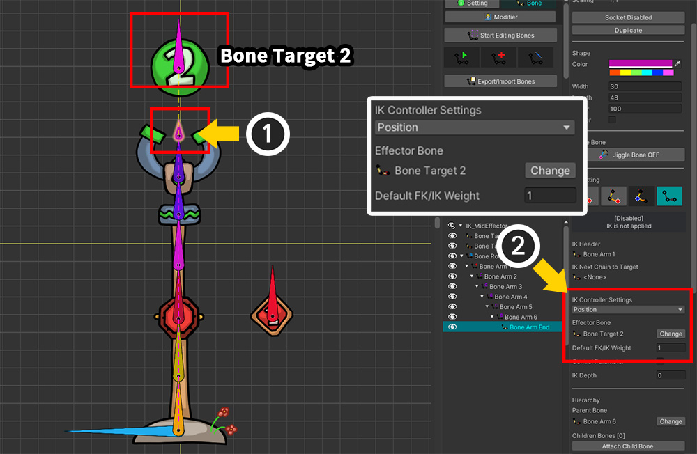
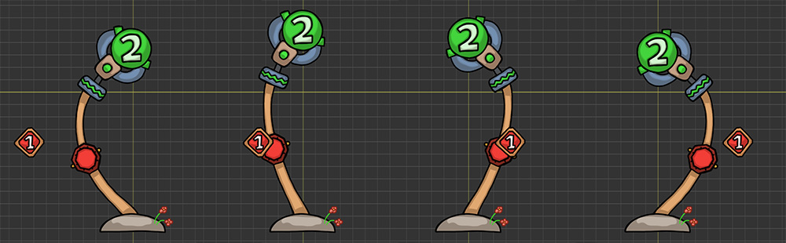
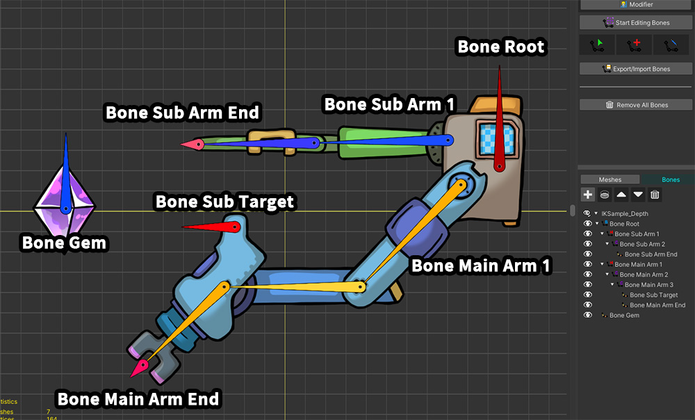
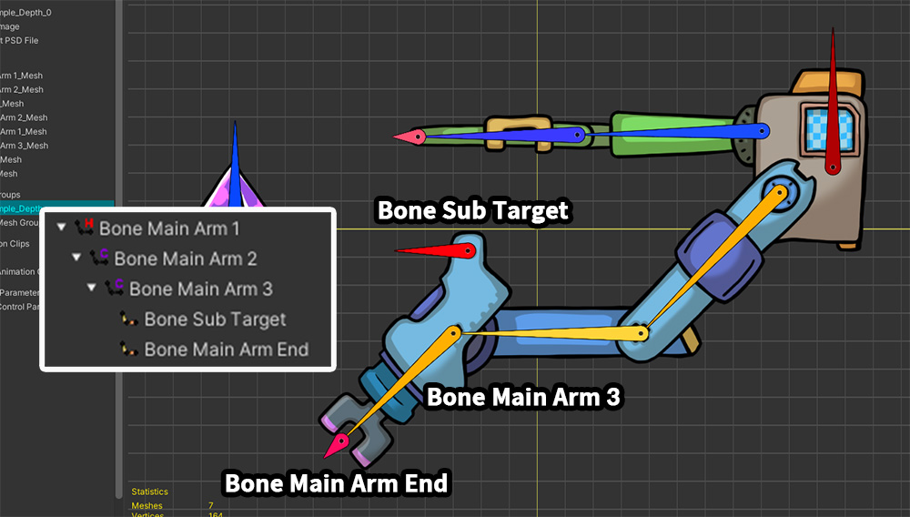
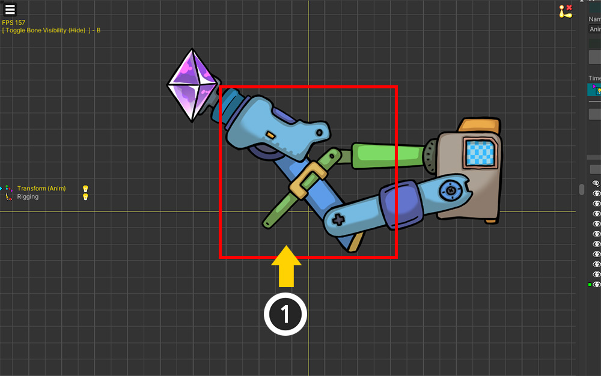

AnyPortrait > 메뉴얼 > 복잡하게 구성된 IK 컨트롤러
복잡하게 구성된 IK 컨트롤러
1.5.0
AnyPortrait v1.5.0에서 IK 컨트롤러가 더 유연하게 사용될 수 있도록 개선되었습니다.
덕분에 복잡하게 구성된 여러 개의 IK 컨트롤러 및 IK 체인들을 자연스럽게 동작시킬 수 있게 되었습니다.
IK 컨트롤러들이 복잡하게 구성되는 경우는 보통 "IK 컨트롤러가 다른 IK 컨트롤러에 종속적인 경우"를 의미할 것입니다.
이 페이지에서는 IK 컨트롤러가 종속적이 되는 몇가지 상황들을 소개합니다.
IK 컨트롤러에 대한 자세한 설명을 다음의 메뉴얼에서 확인해보세요.
- IK 설정
- IK 컨트롤러
IK 체인들이 계층적으로 연결된 경우

IK 컨트롤러가 설정된 2개의 IK 체인들이 계층적으로 연결된 경우를 확인해봅시다.
이 경우엔 자식 IK 체인의 IK 컨트롤러는 부모 IK 체인에 종속적입니다.
즉, "부모 > 자식" 순서로 IK 체인들의 IK 컨트롤러가 순서대로 연산이 되어야 할 것입니다.

IK 컨트롤러가 속한 2개의 IK 체인이 부모-자식 관계로 연결된 예제입니다.
이 로봇은 천장에 연결되어 있으며, 화물을 잡아서 옮깁니다.
(1) 첫번째 IK 체인입니다. 보라색 기계 팔에 의해서 로봇의 몸통이 움직이며, 이 기계 팔은 천장에 매달린 "1"이 적힌 붉은색 대상에 연결됩니다.
(2) 두번째 IK 체인입니다. 로봇의 몸통에 붙어있는 팔은 녹색의 "2"가 적힌 화물을 붙잡습니다.

이 로봇의 주요 본들입니다.
부모 IK 체인에 해당하는 "Bone Parent Arm" 본들과 자식 IK 체인에 해당하는 "Bone Child Arm" 본들이 있습니다.
이 체인들은 서로 연결되어 있으며, 그 사이에 "Bone Body"가 존재합니다.
각각의 IK 컨트롤러들의 대상이 되는 "Bone Target 1"과 "Bone Target 2"도 볼 수 있습니다.

먼저 "부모 IK 체인과 IK 컨트롤러"를 설정해봅시다.
(1) 보라색 기계 팔의 "Bone Parent Arm 1"을 선택하여 "Bone Parent Arm End"까지의 IK 체인을 설정합니다.
(2) 보라색 기계 팔의 마지막 본인 "Bone Parent Arm End"를 선택합니다.
(3) IK 컨트롤러의 타입을 Position 방식으로 설정하고, "Bone Target 1"이 Effector Bone이 되도록 설정한 후, "Default FK/IK Weight"를 1로 설정합니다.

(1) 붉은색 대상("Bone Target 1")을 움직이도록 애니메이션을 만듭니다.
(2) 보라색 기계 팔이 IK 컨트롤러에 의해서 대상에 달라붙습니다.
기계 팔에 붙어있는 로봇의 몸통도 같이 움직이게 됩니다.

이어서 로봇의 팔에 해당하는 "자식 IK 체인"을 설정해봅시다.
(1) 로봇의 팔의 첫번째 본인 "Bone Child Arm 1"을 선택하고 IK 체인이 로봇의 손("Bone Child Arm End")까지 이어지도록 설정합니다.
(2) 로봇의 손("Bone Child Arm End")을 선택합니다.
(3) IK 컨트롤러의 타입을 Position 방식으로 설정하고, 화물("Bone Target 2")이 Effector Bone이 되도록 설정한 후, "Default FK/IK Weight"를 1로 설정합니다.

(1) 화물("Bone Target 2")이 움직이도록 애니메이션을 만듭니다.
(2) IK 컨트롤러에 의해서 로봇의 팔이 화물을 붙잡습니다.
동시에, 보라색 기계 팔의 IK 컨트롤러도 동작하는 것을 볼 수 있습니다.

두개의 IK 컨트롤러의 Effector Bone들만 움직여서 위와 같은 애니메이션을 만들 수 있습니다.
IK 컨트롤러들을 가진 IK 체인들이 서로 "부모-자식" 관계로 연결되었다면, 위와 같이 별다른 설정 없어도 잘 동작하는 것을 볼 수 있습니다.
IK 체인 내에 2개 이상의 Effector가 있는 경우

IK 체인에 속한 2개 이상의 본들에 각각 "IK 컨트롤러"를 설정할 수 있습니다.
즉, 단일 IK 체인에 2개 이상의 Effector Bone이 존재하게 됩니다.
이 경우, 말단에 위치한 IK 컨트롤러가 상위 IK 컨트롤러의 결과에 종속적이 됩니다.

땅에서 솟아난 집게 팔입니다.
이 집게 팔은 "2"라고 적힌 녹색 공을 잡으려고 합니다.
IK 체인에 2개의 IK 컨트롤러를 설정해봅시다.
(1) 집게가 달린 긴 팔입니다. 1개의 IK 체인을 이룹니다.
(2) 집게는 "2"가 적힌 대상을 붙잡으려고 합니다.
(3) 이 팔의 중간에는 작은 소켓이 있습니다. 이 소켓은 "1"이 적힌 대상에 가까워지려고 하는 성질을 가집니다.

IK 체인을 설정해봅시다.
(1) 집게 팔의 첫번째 본인 "Bone Arm 1"을 선택합니다.
(2) "IK Head" 타입으로 변경합니다.
(3) Change IK Target 버튼을 누릅니다.
(4) 이 집게 팔의 마지막 본("Bone Arm End")을 선택하여 IK 체인을 완성합니다.
이 예제는 위의 "계층적으로 연결된 IK 체인들" 예제와 다릅니다.
위의 예제에서 2개의 IK 체인들이 연결된 것과 달리, 이 예제에서는 집게 팔을 이루는 모든 본들이 1개의 IK 체인을 형성하기 때문입니다.

이제 IK 컨트롤러를 설정해봅시다.
먼저 집게 팔이 대상이 되는 물체를 잡도록 만들어 봅시다.
(1) IK 체인의 마지막 본("Bone Arm End")을 선택합니다.
(2) Position 타입의 IK 컨트롤러를 설정하고, Effector Bone을 "Bone Target 2"로 설정한 후, Default FK/IK Weight를 1로 설정합니다.

IK 체인의 중간의 본에도 IK 컨트롤러를 지정해봅시다.
(1) IK 체인의 중간에 해당하는 본을 선택합니다.
(2) 동일하게 Position 타입의 IK 컨트롤러를 설정합니다. 이번에는 "Bone Target 1"을 대상으로 설정합니다. Default FK/IK Weight는 1로 설정합니다.

IK 컨트롤러의 대상이 되는 2개의 본들을 움직여서 애니메이션을 만들면 집게 팔이 위와 같이 움직입니다.
(1) IK 체인의 끝이 되는 집게 팔은 대상 물체를 붙잡습니다.
(2) IK 체인의 중간이 되는 본도 대상을 향해서 움직이지만, 움직이는 범위는 집게 팔이 물체를 잡는 범위 내로 제한됩니다.

완성된 애니메이션 결과입니다.
IK 체인 중간에 IK 컨트롤러를 설정하면 제한적으로 Effector Bone을 향해서 움직이는 것을 볼 수 있습니다.
이 기법을 이용하면, Effector Bone을 중간에 추가하여 IK 컨트롤러에 의해 움직이는 IK 체인의 형태를 제어하는 것이 가능합니다.
Effector가 다른 IK 체인에 속한 경우

만약 Effector Bone이 다른 IK 체인에 속한다면, 해당 IK 컨트롤러는 종속적으로 동작합니다.
Effector Bone을 가진 다른 IK 체인의 연산이 완료되어야 이 IK 컨트롤러가 정상적으로 연산될 수 있기 때문입니다.
그런데 Effector Bone이 속한 다른 IK 체인이 부모-자식 관계를 형성하지 못한다면 문제가 발생합니다.
종속적으로 동작하는 IK 컨트롤러가 나중에 처리가 되어야 하는데, 부모-자식 관계의 IK 체인들이 아니라면 처리 순서를 알 수 없기 때문입니다.
그래서 이 경우엔 IK 컨트롤러의 처리 순서를 직접 지정해줘야 합니다.
이때, "Depth"라는 속성을 이용하여 이 문제를 해결할 수 있습니다.
더 큰 값의 Depth를 가진 IK 컨트롤러가 더 나중에 연산되는 점을 이용해서 문제를 해결해봅시다.
IK 컨트롤러의 처리 순서
IK 컨트롤러의 처리 순서는 다음의 규칙에 의해서 결정됩니다.
1. Depth 속성 값이 작은 경우 먼저 처리됩니다. 동일한 Depth를 가졌다면 다음의 규칙에 의해서 결정됩니다.
2. 부모 본이 자식 본보다 먼저 처리됩니다.
3. 직접적인 부모-자식 관계를 가지지 않는 본들의 처리 순서는 임의로 결정되며 사용자가 수정할 수 없습니다.
4. 본의 계층적인 깊이가 처리 순서를 결정하지 않습니다.

두개의 기계 팔을 가진 로봇입니다.
(1) 푸른색 기계 팔은 보석을 향합니다. 이 기계 팔은 다른 IK 컨트롤러에 의존적이지 않습니다.
(2) 녹색 기계 팔은 푸른색 기계 팔에 연결됩니다. 따라서 녹색 기계 팔은 푸른색 기계 팔보다 나중에 연산되어야 합니다.
위의 예제에서 볼 수 있듯이, 서로 다른 IK 체인들의 IK 컨트롤러들이 상호작용을 하는 경우, 의존적인 IK 체인은 나중에 연산이 되어야 합니다.
Depth가 클 수록 IK 컨트롤러가 나중에 처리되므로, 의존적인 녹색 기계 팔의 Depth가 더 큰 값을 가져야 합니다.

이 예제의 주요 본들입니다.
"Bone Root"에서 "Bone Main Arm"과 "Bone Sub Arm"이 각각 연결되어 있습니다.

여기서 확인해야하는 본은 "Bone Sub Target"입니다.
"Bone Sub Target"은 푸른색 팔을 이루는 "Bone Main Arm 3"의 자식 본입니다.
그리고 이 본은 녹색 기계 팔과 연결될 Effector Bone이기도 합니다.
즉, IK 체인 안에 다른 IK 컨트롤러의 대상이 되는 본이 속한 상태입니다.
이 점을 인지하여 IK 컨트롤러를 설정해봅시다.

먼저, 푸른색 기계 팔에 대한 IK 체인과 IK 컨트롤러를 설정합니다.
(1) "Bone Main Arm 1"을 선택하여 푸른색 기계 팔에 대한 IK 체인을 설정합니다.
(2) IK 체인의 마지막 본인 "Bone Main Arm End"를 선택합니다.
(3) Position 타입의 IK 컨트롤러를 선택하고, 그 대상을 보석("Bone Gem")으로 설정합니다. 기본 가중치도 1로 설정합니다.
(4) IK Depth 속성의 값을 기본값인 "0"으로 설정합니다.

다음으로, 녹색 기계 팔에 대한 설정도 이어서 해줍니다.
(1) "Bone Sub Arm 1"을 선택하여 녹색 기계 팔에 대한 IK 체인을 설정합니다.
(2) IK 체인의 마지막 본인 "Bone Sub Arm End"를 선택합니다.
(3) Position 타입의 IK 컨트롤러를 선택하고, 그 대상을 푸른색 기계 팔에 속한 "Bone Sub Target"으로 설정합니다. 가중치도 1로 설정합니다.
(4) IK Depth 속성의 값을 "1"으로 변경합니다.

(1) 보석이 움직이는 애니메이션을 만듭니다.
(2) IK 컨트롤러에 의해 푸른색 기계 팔이 보석을 잡는 포즈를 취합니다.
(3) 동시에, 녹색 기계 팔이 푸른색 기계 팔과 연결되어 같이 움직입니다.

보석의 움직임에 따라 두개의 기계 팔이 함께 작동하는 애니메이션을 볼 수 있습니다.
처리 순서가 잘못된 경우

만약 IK 컨트롤러의 처리 순서가 잘못되었다면 어떻게 보여질지 확인해봅시다.
(1) 나중에 연산되어야 할 IK 컨트롤러의 본을 선택하고 IK Depth의 값을 0보다 더 낮은 "-1"로 변경해봅시다.
이렇게 설정하면 나중에 동작해야할 이 IK 컨트롤러가 반대로 가장 먼저 처리될 것입니다.

처리 순서가 잘못되어 녹색 기계 팔이 푸른색 기계 팔에 제대로 연결되지 못하는 것을 볼 수 있습니다.
(녹색 팔이 향하는 곳은 푸른색 기계 팔에 IK 컨트롤러가 적용되기 전의 위치입니다.)
위 예제들의 결과를 다음의 동영상에서도 확인해보실 수 있습니다.